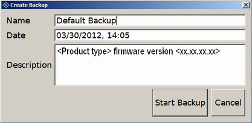

Using this function, you can create a backup of the current instrument installation and its configuration.
In the main dialog (see Figure "Main dialog (example)"), select "Create Backup".
The "Create Backup" dialog is displayed. Under "Description", the current version of the firmware is displayed.

Enter a name for the backup and the date. If necessary, you can add information to the description.
Select "Start Backup".
During the backup process, a progress information dialog is displayed. You can terminate at any time ("Cancel").
After the process has been finished, the dialog is closed automatically, and the main dialog is displayed again.
Note: If you activate "Keep open when finished", the progress information dialog remains open until you close it.
In the main dialog, select "Exit and Reboot".
The backup and restore application is closed, and the R&S CMW is restarted.